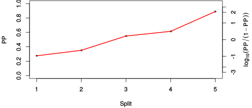

| chain # | burnin | subsample | Iterations (remaining) | command line | subdirectory | directory |
|---|---|---|---|---|---|---|
| 1 | 10000 | 1 | 90000 | bali-phy cat_E6_E7_AA_red3_Alpha.fas -s 46132 -n Alpha_c1 | Alpha_c1-1 | /DATA/work/ONCOGENEVOL/database/trees/Bali-Phy/red3/cat_E6_E7 |
| 2 | 10000 | 1 | 90000 | bali-phy cat_E6_E7_AA_red3_Alpha.fas -s 96124 -n Alpha_c2 | Alpha_c2-1 | /DATA/work/ONCOGENEVOL/database/trees/Bali-Phy/red3/cat_E6_E7 |
| 3 | 10000 | 1 | 90000 | bali-phy cat_E6_E7_AA_red3_Alpha.fas -s 23461 -n Alpha_c3 | Alpha_c3-1 | /DATA/work/ONCOGENEVOL/database/trees/Bali-Phy/red3/cat_E6_E7 |
| P(data|M) = -3155.687 +- 0.166 | Complete sample: 99 topologies | 95% Bayesian credible interval: 14 topologies |
Phylogeny Distribution

| Partition support: Summary |
| Partition support graph: SVG |
{kind=link}
| 50% consensus | Newick (+PP) | SVG | |||||
| 66% consensus | Newick (+PP) | SVG | |||||
| 80% consensus | Newick (+PP) | SVG | |||||
| 90% consensus | Newick (+PP) | SVG | |||||
| 95% consensus | Newick (+PP) | SVG | |||||
| 99% consensus | Newick (+PP) | SVG | |||||
| 100% consensus | Newick (+PP) | SVG | |||||
| MAP | Newick (+PP) | SVG | |||||
| greedy | Newick (+PP) | SVG |
{kind=link}
{kind=link}
{kind=link}
{kind=link}
{kind=link}
{kind=link}
{kind=link}
{kind=link}
Alignment Distribution
Partition 1
| Diff | Min. %identity | # Sites | Constant | Informative | ||||
|---|---|---|---|---|---|---|---|---|
| Initial | FASTA | HTML | Diff | 2.69% | 269 | 1 (0.372%) | 85 (31.6%) | |
| Best (WPD) | FASTA | HTML | AU | 13% | 367 | 21 (5.72%) | 119 (32.4%) |
Mixing
{kind=link}
{kind=link}
| burnin (scalar) | ESS (scalar) | ESS (partition) | ASDSF | MSDSF | PSRF-CI80% | PSRF-RCF |
|---|---|---|---|---|---|---|
| 794 | 8914 | 33831.556 | 0.002 | 0.002 | 1.001 | 1.008 |
Projection of RF distances for the first 3 chains3D | Variation of split PPs across chains |
Scalar variables
| Statistic | Median | 95% BCI | ACT | ESS | burnin | PSRF-CI80% | PSRF-RCF |
|---|---|---|---|---|---|---|---|
| prior | -236.3 | (-271, -207.6) | 28.75 | 9392 | 449 | 1 | 0.9959 |
| prior_A1 | -215.6 | (-248.8, -189.1) | 11.11 | 24311 | 302 | 1 | 1 |
| likelihood | -3138 | (-3156, -3120) | 9.833 | 27460 | 254 | 0.9998 | 1.001 |
| logp | -3374 | (-3405, -3348) | 30.29 | 8914 | 334 | 1 | 0.9968 |
| Heat.beta | 1 | ||||||
| Scale1 | 3.276 | (1.382, 6.328) | 1 | 270003 | 128 | 1 | 1.001 |
| S1.F.pi.A | 0.04723 | (0.0347, 0.06171) | 7.875 | 34283 | 330 | 1 | 0.9988 |
| S1.F.pi.R | 0.07844 | (0.06086, 0.09711) | 8.715 | 30981 | 323 | 1.001 | 0.9931 |
| S1.F.pi.N | 0.03321 | (0.02311, 0.04448) | 8.074 | 33442 | 171 | 1 | 1.005 |
| S1.F.pi.D | 0.06244 | (0.04669, 0.07961) | 7.94 | 34007 | 526 | 1 | 1.005 |
| S1.F.pi.C | 0.04603 | (0.03127, 0.06296) | 8.328 | 32422 | 794 | 0.9993 | 1 |
| S1.F.pi.Q | 0.04755 | (0.03534, 0.06055) | 8.086 | 33389 | 228 | 1.001 | 0.9967 |
| S1.F.pi.E | 0.07331 | (0.05728, 0.09006) | 8.07 | 33456 | 202 | 1 | 0.9989 |
| S1.F.pi.G | 0.04166 | (0.02755, 0.0575) | 8.318 | 32461 | 323 | 0.9999 | 1.001 |
| S1.F.pi.H | 0.03436 | (0.02328, 0.04683) | 7.815 | 34548 | 401 | 0.9989 | 1.008 |
| S1.F.pi.I | 0.05415 | (0.04086, 0.06855) | 8.133 | 33198 | 221 | 0.9999 | 1 |
| S1.F.pi.L | 0.09318 | (0.07314, 0.1143) | 7.481 | 36090 | 219 | 0.9995 | 1.003 |
| S1.F.pi.K | 0.04166 | (0.02974, 0.05485) | 7.909 | 34136 | 617 | 0.9997 | 1.002 |
| S1.F.pi.M | 0.0143 | (0.007913, 0.02191) | 7.882 | 34257 | 353 | 1 | 1.004 |
| S1.F.pi.F | 0.03407 | (0.02259, 0.04701) | 7.864 | 34335 | 248 | 0.9998 | 0.9974 |
| S1.F.pi.P | 0.03868 | (0.02559, 0.05319) | 8.369 | 32260 | 495 | 0.9996 | 1.002 |
| S1.F.pi.S | 0.06391 | (0.04951, 0.07931) | 7.749 | 34845 | 326 | 0.9999 | 1.001 |
| S1.F.pi.T | 0.06816 | (0.05266, 0.08484) | 8.279 | 32613 | 444 | 0.9999 | 0.9981 |
| S1.F.pi.W | 0.02017 | (0.01082, 0.03096) | 7.984 | 33819 | 366 | 0.9999 | 0.9972 |
| S1.F.pi.Y | 0.05086 | (0.03665, 0.06621) | 7.74 | 34884 | 250 | 1 | 0.9994 |
| S1.F.pi.V | 0.04988 | (0.03638, 0.06447) | 8.753 | 30848 | 196 | 1 | 0.9994 |
| I1.RS07.meanIndelLengthMinus1 | 11.99 | (7.467, 17.78) | 2.769 | 97494 | 179 | 1 | 0.9994 |
| I1.RS07.logLambda | -4.13 | (-4.628, -3.702) | 2.206 | 122395 | 113 | 0.9998 | 1.001 |
| |A1| | 352 | (334, 373) | 22.05 | 12244 | 182 | 0.963 | 1.001 |
| #indels1 | 24 | (20, 28) | 9.536 | 28314 | 162 | 0.8333 | 1.001 |
| |indels1| | 316 | (275, 376) | 9.284 | 29081 | 372 | 0.9884 | 0.9995 |
| #substs1 | 516 | (499, 530) | 19.01 | 14202 | 134 | 0.9344 | 1.003 |
| Scale1*|T| | 3.975 | (3.553, 4.418) | 1.968 | 137177 | 122 | 1 | 1.001 |
| |A| | 352 | (334, 373) | 22.05 | 12244 | 182 | 0.963 | 1.001 |
| #indels | 24 | (20, 28) | 9.536 | 28314 | 162 | 0.8333 | 1.001 |
| |indels| | 316 | (275, 376) | 9.284 | 29081 | 372 | 0.9884 | 0.9995 |
| #substs | 516 | (499, 530) | 19.01 | 14202 | 134 | 0.9344 | 1.003 |
| |T| | 1.214 | (0.4769, 2.216) | 1 | 270003 | 136 | 0.9997 | 1.001 |